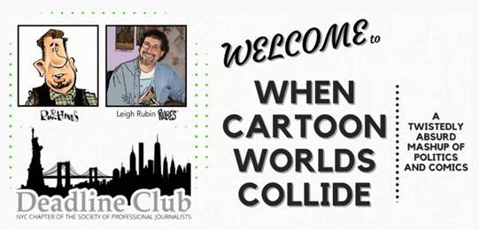
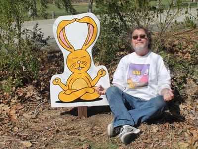

Rubes® in the News


Rubes® 2024 News
Rubin talks with WXXI News about how thinking like a cartoonist can open your mind.
Leigh and friends at the Think Like a Cartoonist event on 4-25-24 in Fairport, N.Y.
"Rubes" cartoonist publishes new book sharing secrets on creativity and humor. Leigh Rubin, author of the long-running comic strip “Rubes,” is no stranger to publishing, having produced more than a dozen collections of his work, but his 20th book is something different entirely. Think Like a Cartoonist: A Celebration of Humor and Creativity examines the creative process from a wide range of perspectives, from the “Rubes” creator’s advice on handling rejection to a novelist’s tips on writer’s block.
Rubes® 2023 News
Rubin still thinks like a cartoonist. To paraphrase Paul Simon, Leigh Rubin, the “Rubes” cartoonist who got his start in the Antelope Valley Press, is going on 40 years in publication, and “still crazy” and creative “after all these years.” Antelope Valley Press, Dec. 27, 2023.
Draw a cow in one minute. Nationally syndicated cartoonist Leigh Rubin lives in San Luis Obispo County and populates his artwork with humorous animals. He shows how to draw a cow in one minute in about 20 moves in this You Tube video.
.
On November 8, 2023, RIT Press hosted syndicated cartoonist Leigh Rubin and friends for a virtual panel discussion on creativity and imagination.
Syndicated cartoonist Leigh Rubin explores the creative process in his new book, Think Like a Cartoonist: A Celebration of Humor and Creativity, published by RIT Press.

Hearts of gold surround Steve Ulrich after transplant surgery Oregon Live, April 8, 2023.

Rubes® 2022 Videos
Rubes® 2021 Videos
Rubes® 2021 Streaming Events
(Streamed live on April 15, 2021) See it on YouTube here
An evening of Cows and Cartoons, hosted by Jane and Steve Sinton and the California Rangeland Trust.
Chuck Jones Creativeside Chat with Leigh Rubin
(Streamed live on April 8, 2021) See it on YouTube here
Comic strip creator/author Leigh Rubin chats with host Ben Olson about the creative process that joins images and words to make the clever, often hilarious, Rubes cartoons.
Rubes® 2020 Streaming Events
Fresno Bee(Streamed live on Oct 28, 2020) See it on YouTube here.
The Secret of Creating the Perfect Cartoon Hosted by The Fresno Bee on October 28, 2020.

Rubes® 2020 Videos
Deadline Club
(Streamed Live on August 25, 2020) See it on YouTube here.
See Leigh's livestreamed online event
Hosted by
the Deadline Club-Society of Professional Journalists
from August 25!

When Cartoon Worlds Collide:
A Twistedly Absurd Mashup of Politics and Comics.
Support Virtual Scouting While Staying at Home
Be among the first to own an original "Virtual Scouting Around the World 2020" patch custom designed by Leigh Rubin (Rubes®). The patch represents how Scouting connects youth and communities worldwide even more now in a virtual setting. Every patch you purchase supports enhanced virtual programming and safe social meeting spaces that enable kids to continue to stay connected with their friends, learn new skills, and support their community.
RIT Cartoonist-in Residence cartoonist Leigh Rubin, creator of the comic strip Rubes, designed special Scouting patches reflecting the coronavirus outbreak and the need for social distancing. They feature a virtual camp-out and marshmallow roast.

Author and cartoonist Leigh Rubin on Good Day Rochester. He explains how he’s working with some local scouts to help them earn their Art Merit Badges. May 1, 2020
Cartoonist (Rubes), Leigh Rubin steps aboard the Commute Podcast animated bus to chat about the creation of his comic, "Rubes". Original air date March 9, 2020.
Rubes® 2019 Videos
 Curiosity & Creativity: A discussion with Leigh Rubin, creator of the cartoon 'Rubes'
Curiosity & Creativity: A discussion with Leigh Rubin, creator of the cartoon 'Rubes'On April 27,2019 cartoonist Leigh Rubin ('Rubes') sat down to discuss curiosity and creativity with RIT School of Communication professor Mike Johansson. The discussion was held in Ingle Auditorium on the campus of the Rochester Institute of Technology during the annual Imagine RIT: Imagination and Creativity Festival. The interview was part of a special 1-credit class offered by RIT's School of Individualized Study called Curiosity & Creativity and taught by Johansson.
 Think Too Much: A stroke of inspiration from cartoonist Rubin.
Think Too Much: A stroke of inspiration from cartoonist Rubin. Rubes® 2018 Videos

Drawing Inspiration: Cartoonist Rubin, filmmaker Johnson to debut TV pilot at Design Week Portland. (Jennifer Best, Santa Maria Times, April 13, 2018).

Inside the quirky mind of 'Rubes' comic creator Leigh Rubin. (The Nashville Tennessean, Jessica Bliss, March 31, 2018).
Cows, bunnies move into the Children's Garden
(Julie Belschner, Agri-View March 31, 2018).
Bunnies invade SLO Botanical Garden Leigh Rubin designed the new signs for the Children's Garden at the San Luis Obispo Botanical Garden. (Laura Dickinson, The Tribune News. March 3, 2018.
Don't miss your chance: An insider's view to cartooning with Leigh Rubin. Santa Maria Times to host event with local cartoonist February. 28, 2018. This article was published Feb 11, 2018
Rubes® 2017 Videos
Jerry Scott, who lives in San Luis Obispo and authors "Zits" and "Baby Blues, and Leigh Rubin, who lives in Nipomo and created "Rubes," describe what it's like to be a cartoonist — and how they keep coming up with new jokes. Joe Johnston, The Tribune


Rubes® 2016 Videos
Oct 11, 2016
The Country Today, September 28, 2016
(click image for larger view)

{kind=link}
Rubes® 2015 Videos
ArtHop preview: Cartoonist Leigh Rubin to speak,
meet fans at Fresno Bee event Dec. 3, 2015.
The creative process: Cartoonist Leigh Rubin to give
2 free presentations in Staten Island, NY. on March 18 and 23rd.,
in the Manzulli Board Room of Foundation Hall at Wagner College.
Staten Island Advance. 3-20-15.
Rubes® 2014 Videos
Copyright © 2023 Leigh Rubin Cartoonist
All Rights Reserved
RUBES® is a registered trademark of Leigh Rubin
Lori's Web Design